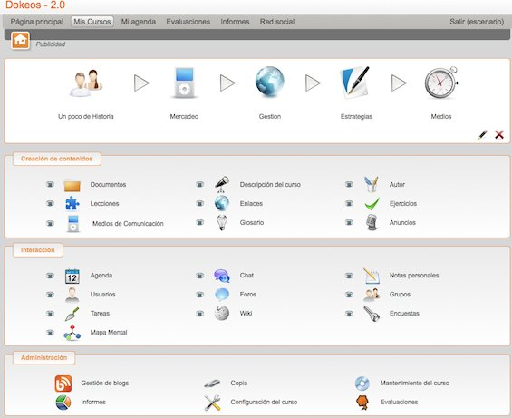

Las principales metas de Dokeos es ser un sistema flexible y de muy fácil uso
mediante una interfaz de usuario sumamente amigable e intuitivo. Ser una herramienta
de aprendizaje, especialmente recomendada a usuarios que tengan nociones mínimas de
computación cuyo objetivo es la preocupación por el contenido.

Lecciones SCORM.
Producción de documentos basados en plantillas.
Ejercicios: opción múltiple, llenado de espacios en blanco, preguntas abiertas...
Interacción: foros, chats y grupos.
Videoconferencia: vía Web (manual de instalación removido en la versión Free 1.8.6, paquete siempre disponible públicamente para descarga1 ).
Trabajos.
Blogs.
Agenda.
Anuncios.
Glosario.
Notas personales.
Red social.
Encuestas.
Autentificación vía LDAP y OpenID.
Evaluaciones.
Reserva de matrícula.
Sesiones de usuario.
Tutorial de cómo instalarlo en localhost con XAMPP